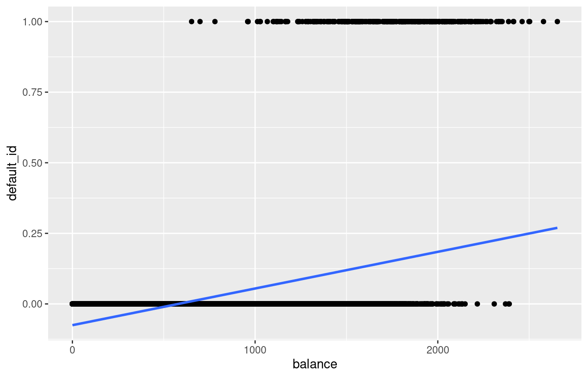

Chapter 4 Multiple Linear Regression (MLR)
Response \(Y\) and more than one predictor variable. We assume
\[Y=f(\mathbf{X}) + \epsilon=\beta_0 + \beta_1 X_1 + \beta_2 X_2 + \ldots + \beta_p X_p + \epsilon\]
\(\beta_j\) quantifies the association between the \(j^{th}\) predictor and the response.
4.1 MLR: Estimating Parameters
We use training data to find \(\hat{\beta}_0, \hat{\beta}_1, \ldots, \hat{\beta}_p\) such that
\[\hat{y}=\hat{\beta}_0 + \hat{\beta}_1 \ x_1 + \ldots + \hat{\beta}_p \ x_p\] Observed response: \(y_i\) for \(i=1,\ldots,n\)
Predicted response: \(\hat{y}_i\) for \(i=1, \ldots, n\)
Residual: \(e_i=y_i - \hat{y}_i\) for \(i=1, \ldots, n\)
Residual Sum of Squares (RSS): \(RSS =e^2_1+e^2_2+\ldots+e^2_n\)
Problem: Find \(\hat{\beta}_0, \hat{\beta}_1, \ldots, \hat{\beta}_p\) which minimizes \(RSS\)
4.3 MLR: Estimating Parameters
Ames Housing dataset
ames <- readRDS("AmesHousing.rds") # read in the dataset after specifying directorymlrfit <- lm(Sale_Price ~ Gr_Liv_Area + Year_Built, data = ames) # fit the MLR model
summary(mlrfit) # produce result summaries of the MLR model##
## Call:
## lm(formula = Sale_Price ~ Gr_Liv_Area + Year_Built, data = ames)
##
## Residuals:
## Min 1Q Median 3Q Max
## -469355 -29029 -590 18691 301689
##
## Coefficients:
## Estimate Std. Error t value Pr(>|t|)
## (Intercept) -2.242e+06 1.234e+05 -18.17 <2e-16 ***
## Gr_Liv_Area 9.781e+01 3.641e+00 26.87 <2e-16 ***
## Year_Built 1.155e+03 6.322e+01 18.27 <2e-16 ***
## ---
## Signif. codes: 0 '***' 0.001 '**' 0.01 '*' 0.05 '.' 0.1 ' ' 1
##
## Residual standard error: 50500 on 765 degrees of freedom
## (113 observations deleted due to missingness)
## Multiple R-squared: 0.6449, Adjusted R-squared: 0.644
## F-statistic: 694.7 on 2 and 765 DF, p-value: < 2.2e-164.4 MLR: Interpreting Parameters
Ames Housing dataset
\(\hat{\beta}_0=-2.242e+06\): With
Gr_Liv_Areaequaling 0 square feet, andYear_Builtequaling 0, the predictedSale_Priceis approximately -2.242e+06 USD. The interpretation is not meaningful in this context.\(\hat{\beta}_1=9.781e+01\): With
Year_Builtremaining fixed, an additional 1 square foot ofGr_Liv_Arealeads to an increase inSale_Priceby approximately 98 USD.\(\hat{\beta}_2=1.155e+03\): With
Gr_Liv_Arearemaining fixed, an additional 1 year onYear_Builtleads to an increase inSale_Priceby approximately 1155 USD.
4.5 MLR: Prediction
Ames Housing dataset
Prediction of Sale_Price when Gr_Liv_Area is 1000 SF for a house built in 1990.
predict(mlrfit, newdata = data.frame(Gr_Liv_Area = 1000, Year_Built = 1990)) # obtain prediction## 1
## 154506.34.6 MLR: Assessing Accuracy of Model
- Residual Standard Error
\[RSE=\sqrt{\dfrac{RSS}{n-p-1}}\]
- \(R^2\) statistic
\[R^2=\dfrac{TSS-RSS}{TSS} = 1 - \dfrac{RSS}{TSS}\]
- Adjusted \(R^2\) statistic
\[\text{Adjusted} \ R^2 = 1 - \dfrac{RSS/(n-p-1)}{TSS/(n-1)}\]
4.7 Your Turn!!!
With the Advertising dataset, create two additional models with sales as response:
mlrfit1: MLR model with TV and radio as predictorsmlrfit2: MLR model with TV, radio, and newspaper as predictors
For each model, note \(p\) (the number of predictors), \(R^2\), \(\text{Adjusted} \ R^2\), \(RSS\), and \(RSE\).
4.8 MLR: Assessing Accuracy of Model
cor(advertising) # obtain correlation matrix## TV radio newspaper sales
## TV 1.00000000 0.05480866 0.05664787 0.7822244
## radio 0.05480866 1.00000000 0.35410375 0.5762226
## newspaper 0.05664787 0.35410375 1.00000000 0.2282990
## sales 0.78222442 0.57622257 0.22829903 1.00000004.9 Question!!!
As we add variables to the linear regression model, (Select all that apply)
the RSE always decreases.
the RSS always decreases.
the \(R^2\) always increases.
the \(\text{Adjusted} \ R^2\) always increases.
the number of parameters always increases.
4.10 K-Nearest Neighbors Regression (multiple predictors)
It is important to scale (subtract mean and divide by standard deviation) the predictors when considering KNN regression so that the Euclidean distance is not dominated by a few of them with large values.
Ames Housing dataset
ames_scaled <- ames %>%
dplyr::select(Sale_Price, Gr_Liv_Area, Year_Built) %>% # select required variables
mutate(Gr_Liv_Area_scaled = scale(Gr_Liv_Area),
Year_Built_scaled = scale(Year_Built)) # scale predictors
head(ames_scaled)## # A tibble: 6 × 5
## Sale_Price Gr_Liv_Area Year_Built Gr_Liv_Area_scaled[,1] Year_Built_scaled[,1]
## <int> <int> <int> <dbl> <dbl>
## 1 244000 2110 1968 1.19 -0.102
## 2 213500 1338 2001 -0.304 0.985
## 3 185000 1187 1992 -0.596 0.688
## 4 394432 1856 2010 0.697 1.28
## 5 190000 1844 1977 0.674 0.194
## 6 149000 NA 1970 NA -0.03594.11 K-Nearest Neighbors Regression (multiple predictors)
Ames Housing dataset
library(caret) # load library
knnfit10 <- knnreg(Sale_Price ~ Gr_Liv_Area_scaled + Year_Built_scaled, data = ames_scaled, k = 10) # 10-nn regressionIt is also important to apply scaling to test data points before prediction. Suppose, you want predictions for Gr_Liv_Area = 1000 SF, and Year_Built = 1990, then
# obtain 10-nn prediction
predict(knnfit10, newdata = data.frame(Gr_Liv_Area_scaled = (1000 - mean(ames$Gr_Liv_Area, na.rm = TRUE))/sd(ames$Gr_Liv_Area, na.rm = TRUE),
Year_Built_scaled = (1990 - mean(ames$Year_Built))/sd(ames$Year_Built)))## [1] 1488504.12 Linear Regression vs K-Nearest Neighbors
Linear regression is a parametric approach (with restrictive assumptions), KNN is non-parametric.
Linear regression works for regression problems (\(Y\) numerical), KNN can be used for both regression and classification (\(Y\) qualitative).
Linear regression is interpretable, KNN is not.
Linear regression can accommodate qualitative predictors and can be extended to include interaction terms as well. Using Euclidean distance with KNN does not allow for qualitative predictors.
In terms of prediction, KNN can be pretty good for small \(p\), that is, \(p \le 4\) and large \(n\). Performance of KNN deteriorates as \(p\) increases - curse of dimensionality.
4.13 Classification Problems
Response \(Y\) is qualitative (categorical).
The objective is to build a classifier \(\hat{Y}=\hat{C}(\mathbf{X})\) that assigns a class label to a future unlabeled (unseen) observation and understand the relationship between the predictors and response.
There can be two types of predictions based on the research problem.
Class probabilities
Class labels
4.14 Classification Problems: Example
Default dataset
## default student balance income
## 1 No No 729.5265 44361.625
## 2 No Yes 817.1804 12106.135
## 3 No No 1073.5492 31767.139
## 4 No No 529.2506 35704.494
## 5 No No 785.6559 38463.496
## 6 No Yes 919.5885 7491.559table(Default$default)##
## No Yes
## 9667 3334.15 Classification Problems: Example
For some algorithms, we might need to convert the categorical response to numeric values.
Default dataset
Default$default_id <- ifelse(Default$default == "Yes", 1, 0) # create 0/1 variable
head(Default, 10) # print first ten observations## default student balance income default_id
## 1 No No 729.5265 44361.625 0
## 2 No Yes 817.1804 12106.135 0
## 3 No No 1073.5492 31767.139 0
## 4 No No 529.2506 35704.494 0
## 5 No No 785.6559 38463.496 0
## 6 No Yes 919.5885 7491.559 0
## 7 No No 825.5133 24905.227 0
## 8 No Yes 808.6675 17600.451 0
## 9 No No 1161.0579 37468.529 0
## 10 No No 0.0000 29275.268 04.16 Why Not Linear Regression?
Default dataset
slrfit <- lm(default_id ~ balance, data = Default) # fit SLR
summary(slrfit$fitted.values) # summary of y_hats## Min. 1st Qu. Median Mean 3rd Qu. Max.
## -0.07519 -0.01263 0.03178 0.03330 0.07628 0.26953## `geom_smooth()` using formula = 'y ~ x'
Linear regression does not model probabilities well. Linear regression might produce probabilities less than zero or bigger than one.
4.17 Why Not Linear Regression?
Suppose we have a response \(Y\),
Linear regression suggests an ordering, and in fact implies that the difference between stroke and drug overdose is the same as between drug overdose and epileptic seizure.
4.18 Logistic Regression
Consider a one-dimensional two-class problem.
Transform the linear model \(\beta_0 + \beta_1 \ X\) so that the output is a probability.
Use logistic or sigmoid function \[g(t)=\dfrac{e^t}{1+e^t} \ \ \ \text{for} \ t \in \mathcal{R}\]
Suppose \(p(X)=P(Y=1|X)\). Then, \[p(X)=g\left(\beta_0 + \beta_1 \ X\right)=\dfrac{e^{\beta_0 + \beta_1 \ X}}{1+e^{\beta_0 + \beta_1 \ X}}\]
\(e \approx 2.71828\) is a mathematical constant (Euler’s number).
4.20 Your Turn!!!
Consider \(p(X)=P(Y=1|X) = \dfrac{e^{\beta_0 + \beta_1 \ X}}{1+e^{\beta_0 + \beta_1 \ X}}\). Find
\(1-p(X)\)
\(\ln \left(\dfrac{p(X)}{1-p(X)}\right)\)
4.21 Logistic Regression: Example
Attrition dataset
library(modeldata) # load library
data("attrition") # load datasetWe will consider Attrition as the response variable.
To mimic real-world ML practices, we will split the dataset into a tranining and test set. We will build our model on the training set and evaluate its performance on the test set.
set.seed(011723) # fix the random number generator for reproducibility
library(caret) # load library
train_index <- createDataPartition(y = attrition$Attrition, p = 0.8, list = FALSE) # split available data into 80% training and 20% test datasets
attrition_train <- attrition[train_index,] # training data, use this dataset to build model
attrition_test <- attrition[-train_index,] # test data, use this dataset to evaluate model's performance4.22 Logistic Regression: Estimating Parameters
Attrition dataset
Let’s build a logistic regression model with MonthlyIncome as the predictor.
logregfit <- glm(Attrition ~ MonthlyIncome, data = attrition_train, family = binomial) # fit logistic regression model
summary(logregfit) # obtain results##
## Call:
## glm(formula = Attrition ~ MonthlyIncome, family = binomial, data = attrition_train)
##
## Deviance Residuals:
## Min 1Q Median 3Q Max
## -0.7776 -0.6676 -0.5782 -0.3121 2.6570
##
## Coefficients:
## Estimate Std. Error z value Pr(>|z|)
## (Intercept) -9.040e-01 1.441e-01 -6.272 3.56e-10 ***
## MonthlyIncome -1.307e-04 2.413e-05 -5.418 6.04e-08 ***
## ---
## Signif. codes: 0 '***' 0.001 '**' 0.01 '*' 0.05 '.' 0.1 ' ' 1
##
## (Dispersion parameter for binomial family taken to be 1)
##
## Null deviance: 1040.5 on 1176 degrees of freedom
## Residual deviance: 1001.5 on 1175 degrees of freedom
## AIC: 1005.5
##
## Number of Fisher Scoring iterations: 54.23 Logistic Regression: Individual Predictions
Attrition dataset
For MonthlyIncome=$5000,
\[\hat{p}(X)=\dfrac{e^{\hat{\beta}_0+\hat{\beta}_1 X}}{1+e^{\hat{\beta}_0+\hat{\beta}_1 X}}=\dfrac{e^{-0.904 + (-0.0001307 \times 5000)}}{1+e^{-0.904 + (-0.0001307 \times 5000)}}=0.174\]
predict(logregfit, newdata = data.frame(MonthlyIncome = 5000)) # obtain log-odds predictions## 1
## -1.557622predict(logregfit, newdata = data.frame(MonthlyIncome = 5000), type = "response") # obtain probability predictions## 1
## 0.17398814.24 Logistic Regression: Test Set Predictions
Attrition dataset
To predict probabilities for observations in the test set, we use
logreg_prob_preds <- predict(logregfit, newdata = attrition_test, type = "response") # obtain probability predictions
head(logreg_prob_preds) # predicted probabilities for first six observations in test set## 1 13 15 18 19 39
## 0.1561133 0.1695803 0.1896750 0.2223808 0.2370187 0.22613324.25 Logistic Regression: Test Set Predictions
Attrition dataset
Set a threshold to obtain predicted class labels. The following uses a threshold of 0.5.
threshold <- 0.5 # set threshold
logreg_class_preds <- factor(ifelse(logreg_prob_preds > threshold, "Yes", "No")) # obtain class predictions4.26 Logistic Regression: Performance
Attrition dataset
library(caret) # load package 'caret'
# create confusion matrix
levels(logreg_class_preds) = c("No", "Yes") # create 'Yes' factor level (not always required)
confusionMatrix(data = relevel(logreg_class_preds, ref = "Yes"),
reference = relevel(attrition_test$Attrition, ref = "Yes"))## Confusion Matrix and Statistics
##
## Reference
## Prediction Yes No
## Yes 0 0
## No 47 246
##
## Accuracy : 0.8396
## 95% CI : (0.7925, 0.8797)
## No Information Rate : 0.8396
## P-Value [Acc > NIR] : 0.5388
##
## Kappa : 0
##
## Mcnemar's Test P-Value : 1.949e-11
##
## Sensitivity : 0.0000
## Specificity : 1.0000
## Pos Pred Value : NaN
## Neg Pred Value : 0.8396
## Prevalence : 0.1604
## Detection Rate : 0.0000
## Detection Prevalence : 0.0000
## Balanced Accuracy : 0.5000
##
## 'Positive' Class : Yes
##